Design in four operations
Top plate
Box shapeA box sized to hold the name, with a small radius so the edges are rounded and comfortable to wear.
- Size
- 31 × 9 × 6.5 mm
- Radius
- 1 mm, 10 steps
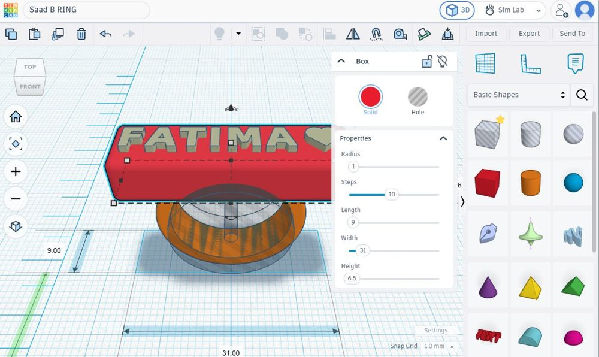
The box shape for the plate. Ring band
Tube shapeA tube rotated 90 degrees to stand upright, then raised until its top sank into the bottom of the plate so the two parts join into one solid piece.
- Radius
- 10.75 mm
- Inside
- 17.5 mm
- Wall
- 2 mm thick, 6 mm wide
- Finish
- 64 sides, 0.6 bevel
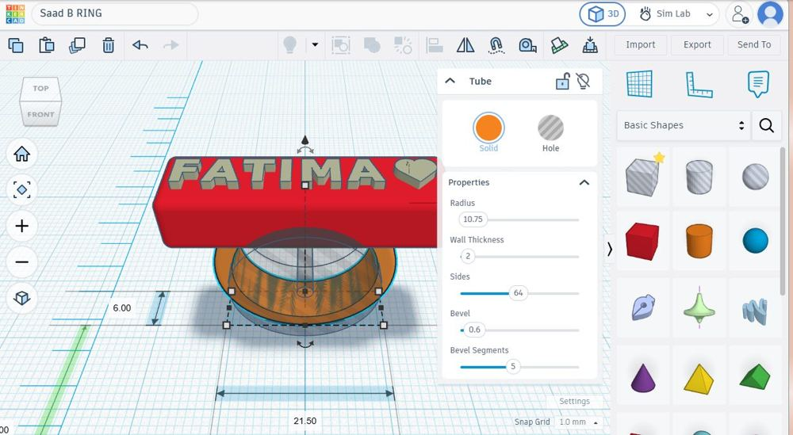
The tube shape for the band. Raised name
Text and heart shapesThe name FATIMA with a heart beside it, set 1 mm tall and placed on top of the plate so it stands out when printed.
- Height
- 1 mm raised
- Footprint
- About 27.8 × 4 mm
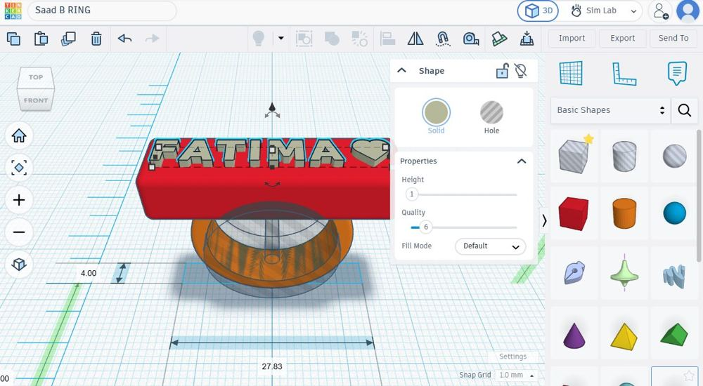
The text and heart on the plate. Group and export
Group, then export STLAll shapes selected and grouped into one solid object, then exported as an STL file for the slicer.
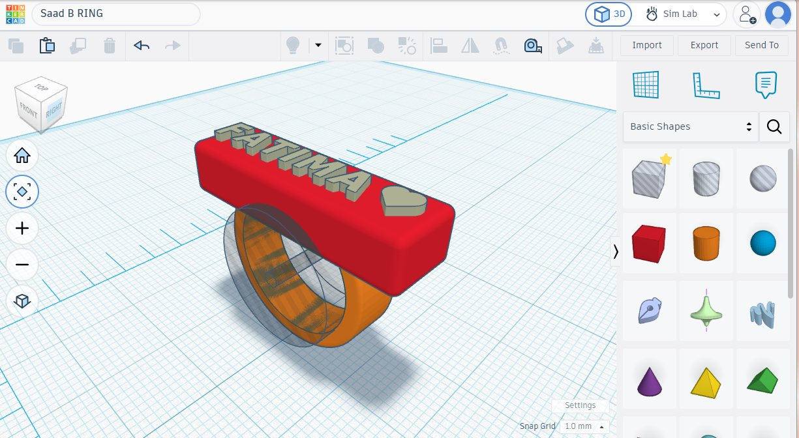
All parts together before grouping. 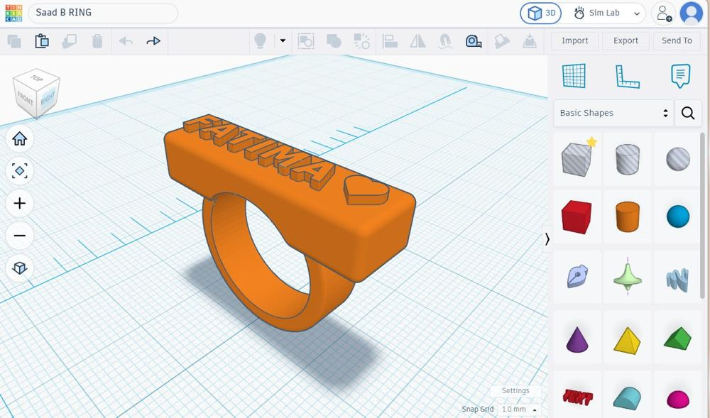
The grouped ring, ready to export.
Printing in the Makerspace
The STL went into PrusaSlicer, which cuts the model into thin layers and writes the path the nozzle follows. Supports were needed because the bottom of the band and the ends of the plate hang over empty space, so the slicer used organic tree supports with a brim at the bottom to help them stick.
The Prusa CORE One+ is a fully enclosed CoreXY printer, a layout built for fast and accurate movement.
| Build volume | 250 × 220 × 270 mm |
|---|---|
| Nozzle | 0.4 mm |
| Filament | 1.75 mm |
| Max nozzle temperature | 290 °C |
| Max bed temperature | 120 °C |
| Enclosure | Closed, heated chamber up to 55 °C |
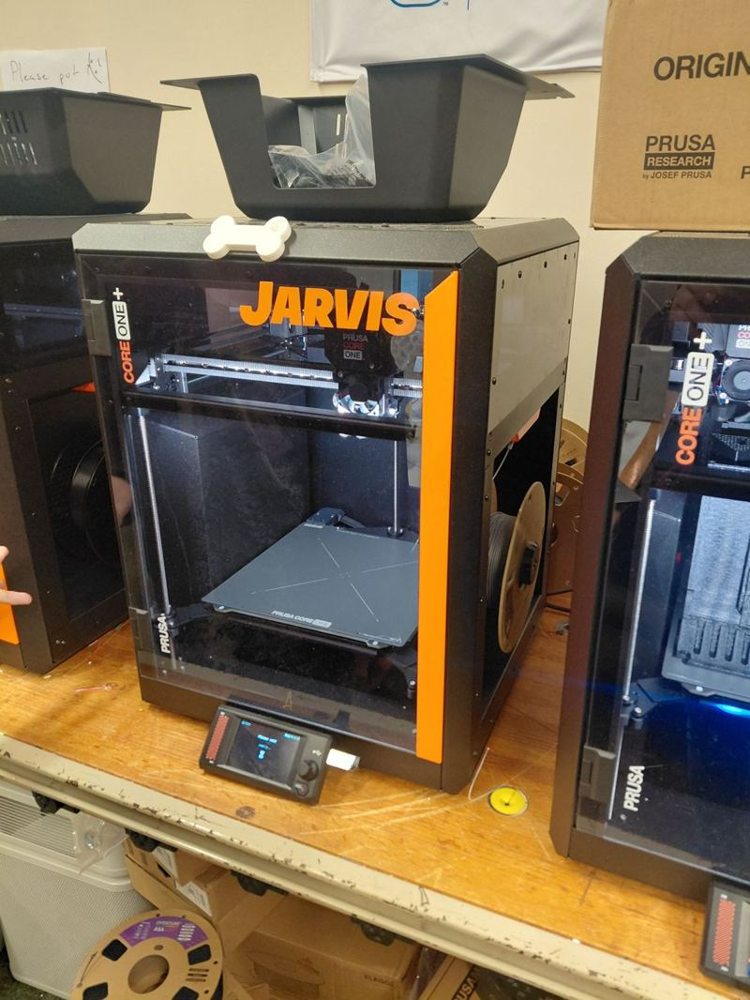
The result
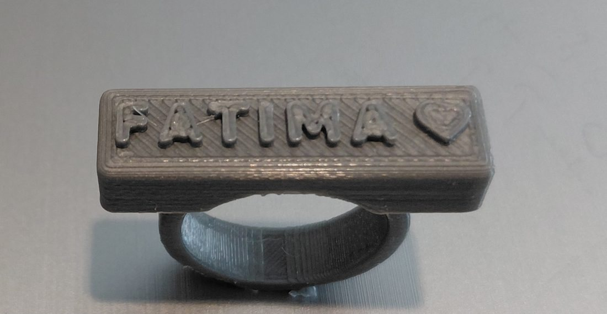
The ring printed in grey PLA on the first try, so I did not need to reprint it. It came out the same shape as my Tinkercad design, with the band fully connected to the plate as one solid piece. The supports held everything up while printing and came off without breaking the ring.
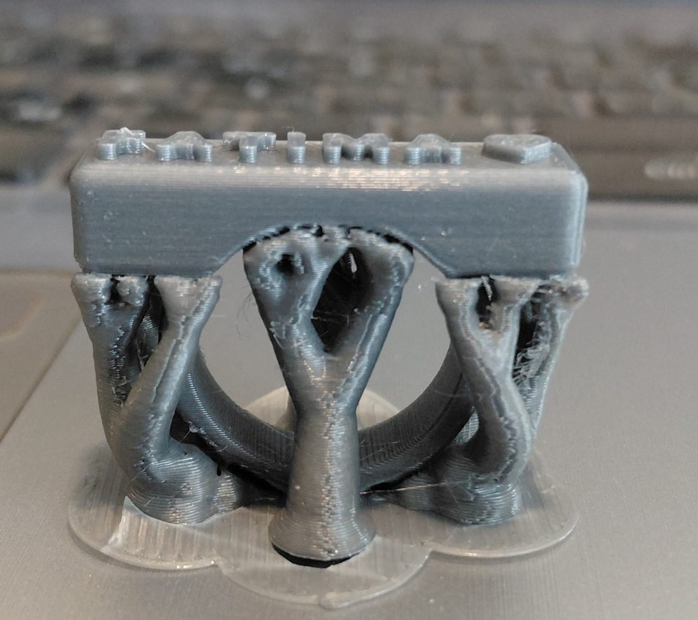
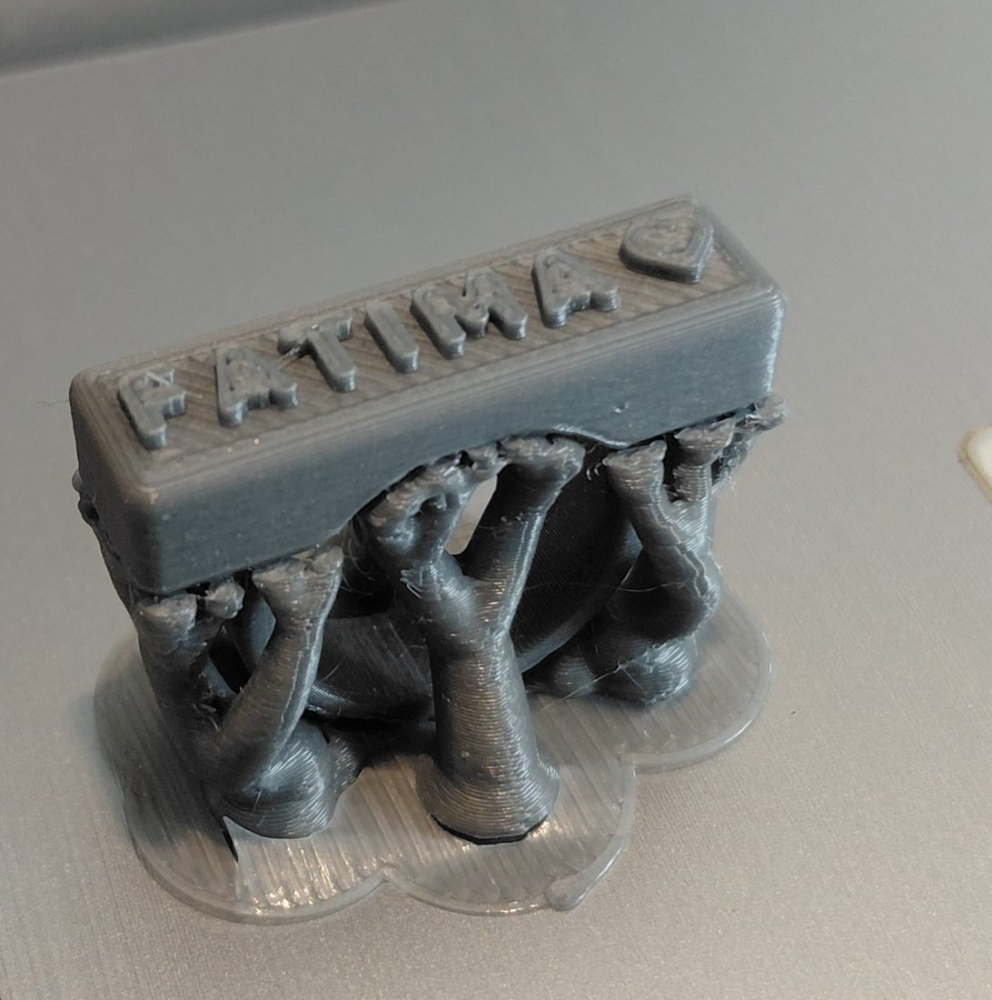
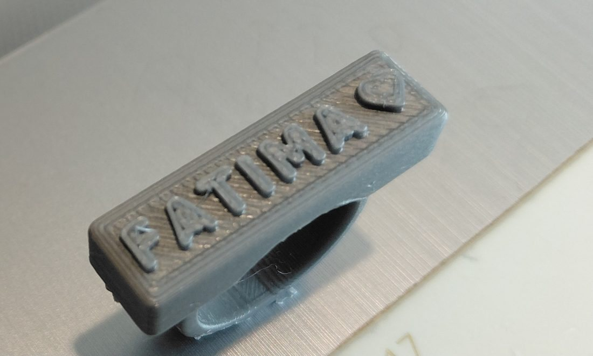
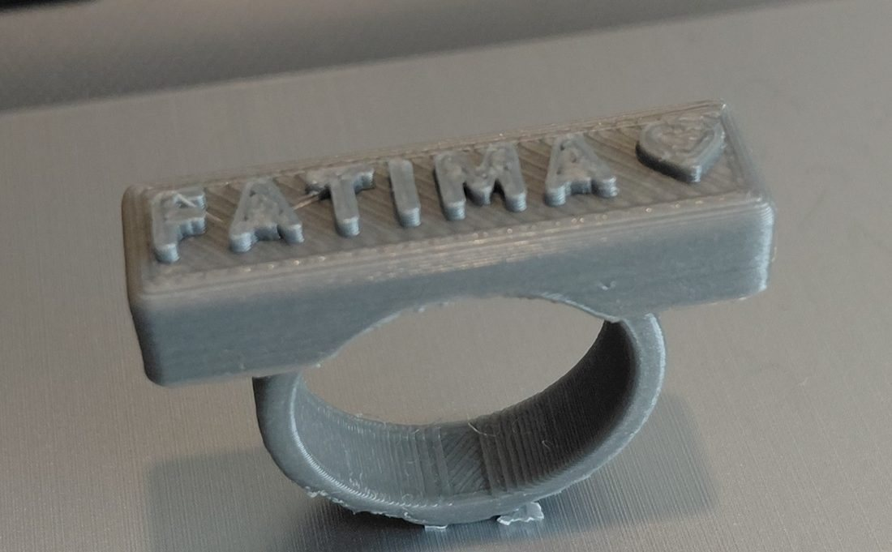
What worked
- One solid piece, with the band and plate fully joined.
- The letters and heart are clear, and 1 mm was tall enough for them to stand out.
- The supports came off cleanly without breaking the ring.
What was not perfect
- Stringing. Thin strands of plastic across some letters and inside the band, from plastic dripping while the nozzle moved between letters.
- Small rough spots under the plate and band where the supports touched.
- Visible layer lines on the sides and lines on the top layer.
- The letters are only about 4 mm tall, so their edges came out a little rounded.
Most of these could be cleaned up with a hobby knife or some sanding.
What I learned about designing for printing
The whole ring is a box, a tube, and text, combined and grouped into one part.
The band had to sink into the plate. Shapes that only touch can print as separate pieces.
Anything hanging over open space needs supports, which adds print time and cleanup.
The inside diameter and 1 mm letter height were chosen to fit a finger and stay readable at a small scale.
Where Tinkercad falls short
Tinkercad was easy to use, but it mostly works with simple shapes, so detailed or curved designs are hard. Changing one size does not update the rest of the design, and it does not warn you when something will be hard to print. I only saw the overhang problem once the model was in the slicer.
Next time
- Change how the ring sits on the bed so it needs fewer supports.
- Adjust the slicer settings to cut down on stringing.